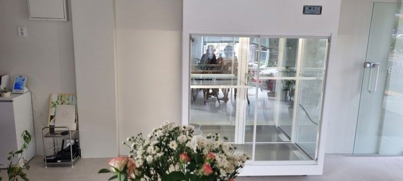
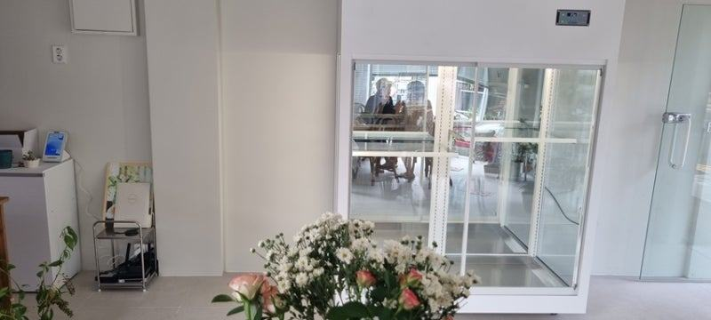
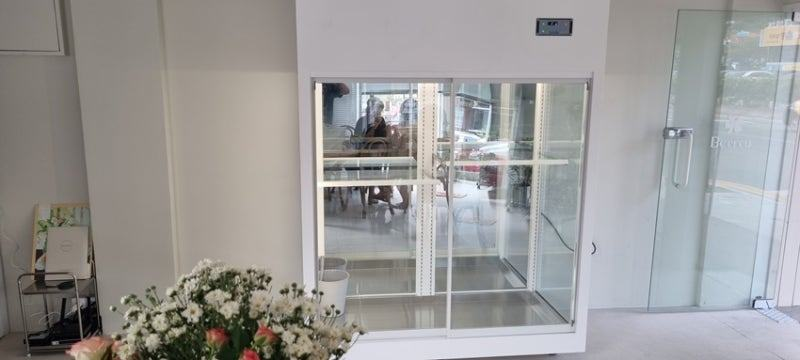
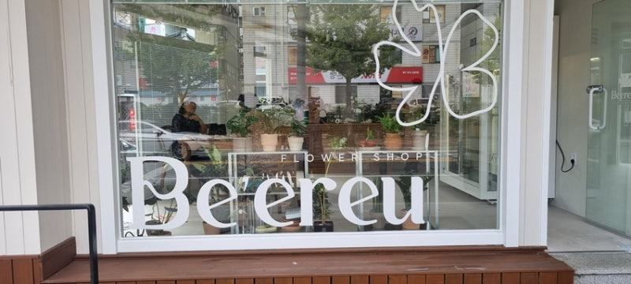
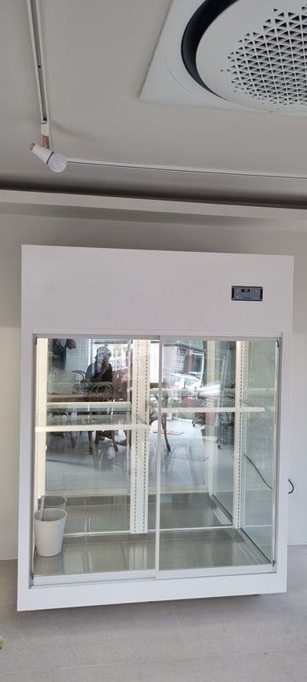
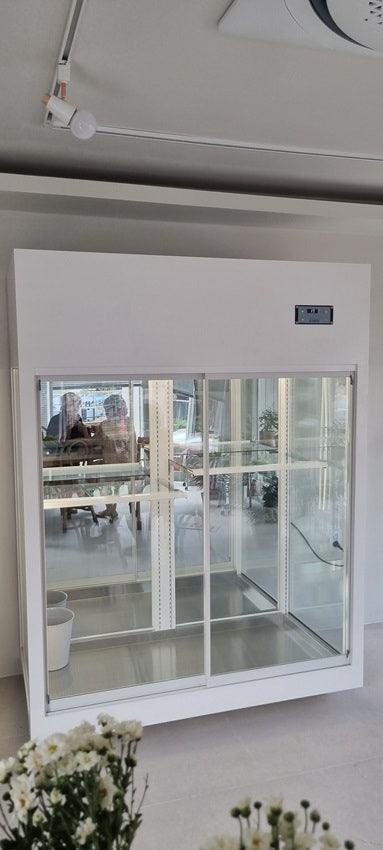

제과쇼케이스
제과쇼케이스 간냉식 직냉식, 케이크·빵 매장에 맞는 선택

당일 판매하는 케이크와 디저트를 유리 너머로 보여 주는 제과쇼케이스는 성에가 끼지 않고 내부 온도가 고른 간냉식이 대체로 맞습니다. 다만 간냉식은 바람 때문에 수분이 빠질 수 있으니, 오래 두는 상품이 많거나 얼려 보관하는 품목이 있다면 직냉식 보조 장비와 함께 쓰는 방법을 고려해 보세요.
안녕하세요. 베이커리와 디저트 카페의 제과쇼케이스를 매장 콘셉트에 맞춰 만드는 한성쇼케이스입니다.
견적을 받다 보면 간냉식, 직냉식이라는 말이 꼭 나옵니다. "둘 중 뭐가 더 좋은 건가요?" 하고 물으시는데, 솔직히 말씀드리면 더 좋은 방식이 따로 있는 게 아니라 매장에서 파는 상품에 맞는 방식이 있을 뿐입니다.
제과 매장은 생크림 케이크, 무스, 타르트, 구움과자, 샌드위치까지 수분과 온도에 반응하는 정도가 제각각이라 냉각 방식 선택이 진열 품질에 그대로 드러납니다.
오늘은 두 방식의 차이를 제과 진열 관점에서 풀어 보고, 우리 매장에는 어느 쪽이 맞는지 판단하는 기준을 정리해 드리겠습니다.
1. 직냉식은 어떻게 식히나요
직냉식은 냉각관이 내부 벽면에 붙어 있어 공기를 직접 차갑게 만드는 방식입니다. 김치냉장고를 떠올리시면 쉽습니다.
바람을 불지 않으니 상품의 수분 손실이 적고 구조가 단순해 수리가 쉬운 편입니다.
단점은 성에입니다. 냉각면이 매우 차가워 문을 잠깐만 열어도 습기가 얼어붙고, 쌓이면 직접 제상해야 합니다.
냉각관과 가까운 곳과 먼 곳의 온도 차도 생기기 쉬워 선반 위치마다 상품 상태가 달라질 수 있습니다.
2. 간냉식은 어떻게 식히나요
간냉식은 별도 공간에서 만든 찬 공기를 팬으로 쇼케이스 안에 돌리는 방식입니다. 자동으로 제상이 이뤄져 성에가 끼지 않고, 내부 전체 온도가 고르게 유지되며, 문을 열었다 닫은 뒤 온도를 되찾는 속도도 빠릅니다.
대신 바람이 계속 돌기 때문에 상품 표면이 마를 수 있습니다. 생크림 표면이 갈라지거나 빵이 딱딱해지는 것이 이 때문입니다.
부품이 많은 만큼 직냉식보다 구조가 복잡하다는 점도 알아 두세요.


3. 제과 매장에서 간냉식을 많이 쓰는 이유
케이크와 디저트는 유리 너머로 모양과 색을 보여 주는 게 판매의 시작입니다. 성에나 김이 끼면 진열 자체가 무너지니, 유리를 맑게 유지하는 간냉식이 제과쇼케이스의 기본이 됩니다.
꽁꽁 얼면 안 되는 디저트를 시원하게 유지하는 데도 맞습니다.
간냉식의 수분 손실은 운영으로 줄일 수 있습니다. 당일 판매량을 기준으로 소량씩 만들어 채우고, 예약 케이크처럼 오래 두는 상품은 밀폐 용기나 상자에 넣어 보관해 보세요.
바람이 상품에 직접 닿지 않도록 토출구 앞에는 키 큰 케이크를 두지 않는 것도 방법입니다.
- 당일 판매량 기준으로 소량씩 채우세요.
- 예약 케이크는 상자나 밀폐 용기에 보관하세요.
- 토출구 바로 앞에는 마르기 쉬운 상품을 피하세요.
4. 직냉식이 맞는 경우
얼려서 보관하는 반죽, 냉동 생지, 아이스 디저트처럼 낮은 온도로 오래 보관하는 품목이 많다면 손님에게 보이지 않는 주방 쪽 보조 장비로 직냉식을 두는 것도 좋은 선택입니다.
전기 부담이 상대적으로 덜하고 수분 손실이 적어 보관용으로 맞습니다.
결국 손님 앞 진열은 간냉식, 주방 보관은 필요에 따라 직냉식으로 역할을 나누는 매장이 많습니다. 진열 품목과 보관 품목을 나눠 적어 오시면 어떤 조합이 맞는지 함께 정리해 드립니다.
체크리스트
- 진열 품목과 보관 품목 구분
- 성에·김서림 허용 여부
- 당일 판매 위주인지 장기 보관인지
- 생크림 등 마르기 쉬운 상품 비중
- 토출구 위치와 진열 배치
- 제상 관리 가능 여부
현장에서 자주 보는 경우: 케이크가 마른다며 직냉식을 찾으실 때
간냉식 케이크쇼케이스를 쓰시던 사장님이 케이크 표면이 마른다며 직냉식으로 바꾸고 싶다고 상담하시는 경우가 있습니다.
직냉식은 수분 손실이 적은 대신 성에가 쉽게 생기고 문을 잠깐 열어도 온도 차가 커서, 유리 너머로 보여 줘야 하는 케이크 진열에는 맞지 않는 경우가 많습니다.
이럴 때는 냉각 방식을 바꾸기보다 당일 판매 기준으로 소량씩 만들어 채우고, 예약 시간이 늦은 케이크는 밀폐 용기에 두시라고 권해 드립니다.
업종에 맞는 방식을 고르는 것이 중요하지, 어느 한쪽이 더 낫다고 말하기는 어렵습니다.








자주 묻는 질문
간냉식은 전기요금이 더 나오나요?
팬과 제상 장치가 함께 돌아가 상대적으로 조금 더 쓰는 편입니다. 다만 문을 연 뒤 온도 회복이 빠르고 성에 제거를 위해 영업 중 전원을 끌 일이 없어 운영 면에서 이점이 있습니다.
한 쇼케이스 안에 케이크와 구움과자를 같이 둬도 되나요?
가능합니다. 다만 구움과자는 냉기가 강한 곳에서 눅눅해지거나 딱딱해질 수 있어 상단이나 온도가 덜 낮은 칸에 두시는 편이 좋습니다.
고장이 나면 A/S는 어떻게 받나요?
한성쇼케이스는 전국 240여 개 A/S 센터를 운영하고 있습니다. 냉각 방식과 관계없이 가까운 센터를 통해 접수하실 수 있습니다.
매장 조건에 맞춰 만드는 한성쇼케이스
원하시는 제품 사진과 설치할 공간 사진만 보내 주셔도 매장에 맞는 구성을 추천해 드립니다.
- 전국 240여 개 A/S 전담 센터 운영
- 본사 대량 자재 매입으로 품질 대비 합리적인 가격
- 유럽제·삼성 냉각 콤프레셔 적용
- 국내 최초 쇼케이스 전문 디자이너 상주
매장 폭과 원하는 진열 구성을 알려 주세요. 실측과 견적을 안내해 드립니다.
031-986-2458